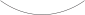

About the project:
What we collectively define as truth is slowly but constantly changing. Any work, literary, artistic or otherwise, encapsulates the specific paradigm under which it was created. Diderot and d’Alembert’s Encyclopédie not only gathered vast amounts of information, but inevitably imprinted its unique world view, ideals and beliefs. Likewise, present-day Wikipedia is an embodiment of contemporary ideals and how we currently perceive the world.
We are interested in how paradigms change over time and how deeply they can influence the way we think and the content we create. In order to compare the content of the Encyclopédie and Wikipedia, we created an algorithm which analyses the texts and finds the most common word connections in the text, highlighting the central topics of the articles. In order to retain the context in which words are being used we only gathered word connections within sentences, as opposed to analysing the text as a whole.
About our text analysis algorithm:
The algorithm we wrote filters stop words, such as “the”, “I”, “and”, etc. Then it takes every word and connects it to the rest of the words within the same sentence. We sorted these results based on frequency, resulting on the most common word connections for the text. These results consistently point out what the text is mainly talking about.
step 1
The sun is shining. The ducks are swimming in the pond.
step 2
The sun is shining. The ducks are swimming in the pond.
step 3
The sun is shining. The ducks are swimming in the pond.
results:
sun ↔ shining
ducks ↔ swimming
ducks ↔ pond
swimming ↔ pond
Credits:
Concept & Development by Daniel Hernández & Dóra Kerekes
Supervised by Niels Schrader and Lauren Alexander
Theory component tutoring by Maarten Cornel
Special thanks to Susana Carvalho and Kai Bernau for providing us their Atlas typeface family
This project was initiated as a part of the Royal Academy of Art The Hague's Graphic Design BA. It is currently exhibited in the Declaring Reason exhibition in the Museum Meermanno.